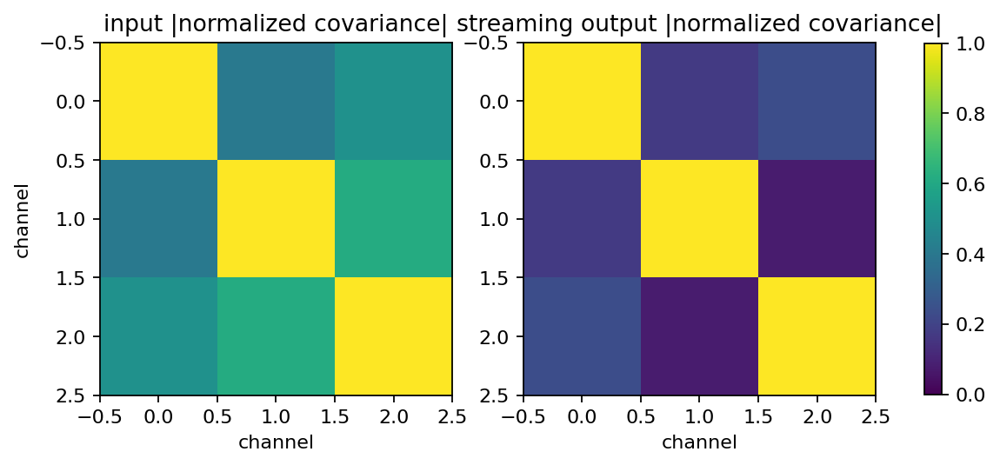
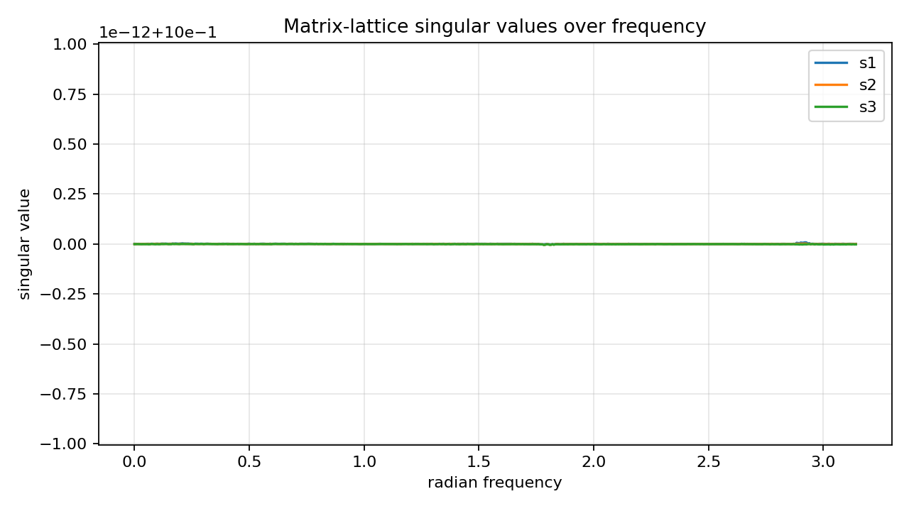
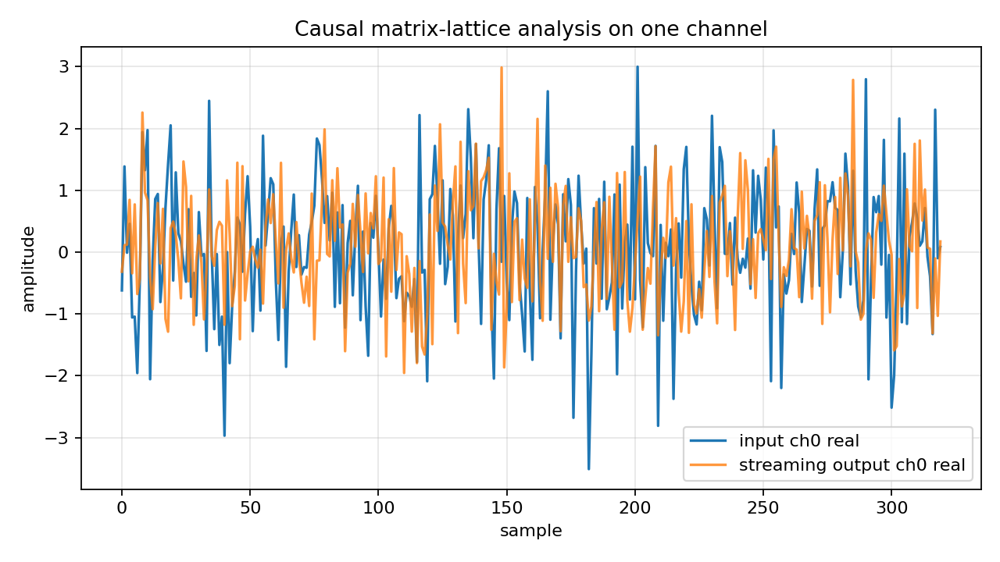

Coupled MIMO matrix-lattice filtering¶
Tutorial goal
Apply a matrix-lattice all-pass to a coupled complex MIMO signal block and verify streaming energy preservation.
Note
New to the terminology? See the lattice DSP concept map and the causality/data-use guide for how online, offline, block, and MIMO examples should be read.
Context¶
This tutorial moves from static frequency-response diagnostics to a signal-processing use
case. A coupled complex multichannel signal is transformed by the causal
OnlineMatrixLatticeAllPass runtime. A finite-record time-domain adjoint then checks
reconstruction. The example verifies that the matrix-lattice response preserves energy
while still mixing channels in a frequency-dependent way.
Key idea and equations¶
The matrix-lattice response \(G(z)\) is designed as an all-pass multichannel transform:
The forward online runtime applies the causal convolution
where \(H_k\in\mathbb{C}^{c\times c}\) are matrix impulse-response coefficients. Energy preservation holds on the full stream, including the decaying all-pass tail:
The finite-record synthesis diagnostic applies the time-domain adjoint
This adjoint is noncausal as a streaming inverse because it needs future transformed samples, but it is useful when the whole record is available.
Causality and data use¶
The forward analysis path is causal and sample-by-sample. The reconstruction check is a finite-record time-domain adjoint, so it is noncausal/transductive by design and should not be confused with a causal stable inverse.
What this example verifies¶
This verifies streaming coupled forward filtering. The output is produced by the online matrix-lattice runtime, off-diagonal impulse/Markov energy shows channel coupling, and the finite-record adjoint is labeled separately as a noncausal reconstruction diagnostic.
How to read the result¶
Look for near-zero unitarity, energy, streaming-vs-impulse, and finite-adjoint reconstruction errors. The covariance plots show that the streaming block is coupled even though it is norm preserving.
Run command¶
python examples/coupled_mimo_lattice_filter.py
Run status¶
Return code: 0
Captured stdout¶
channels: 3
matrix-lattice order: 5
samples: 2048
tail samples for energy/reconstruction: 768
max reflection singular value: 0.7944
real scalar parameter count: 108
max unitarity error: 2.229e-14
streaming vs truncated impulse error: 3.796e-09
energy relative error with tail: 3.145e-16
finite-adjoint reconstruction error: 2.906e-09
input/output mean off-diagonal covariance: 0.508 0.162
causal analysis: y[n] is produced by OnlineMatrixLatticeAllPass before future x samples are seen
finite adjoint: reconstruction uses the whole transformed block and is noncausal
Figures¶
{kind=link}

coupled_mimo_lattice_covariance.png¶
{kind=link}

coupled_mimo_lattice_singular_values.png¶
{kind=link}

coupled_mimo_lattice_streaming_trace.png¶
Generated data files¶
Source code¶
1"""Tutorial: coupled MIMO matrix-lattice filtering with streaming analysis.
2
3A :class:`lattice_dsp.MatrixLatticeAllPass` is a square, multichannel,
4frequency-dependent all-pass mixing system. This example applies the forward
5analysis transform with the causal online runtime, then uses a finite-record
6noncausal adjoint in the time domain to check reconstruction. The example is
7about the matrix-lattice runtime and diagnostics, not about model reduction.
8"""
9
10from __future__ import annotations
11
12import csv
13import os
14from pathlib import Path
15
16import numpy as np
17
18import lattice_dsp as ld
19
20
21def artifact_dir() -> Path:
22 path = Path(os.environ.get("LATTICE_DSP_ARTIFACT_DIR", "reports/example-artifacts"))
23 path.mkdir(parents=True, exist_ok=True)
24 return path
25
26
27def make_coupled_lattice(channels: int = 3, order: int = 5, seed: int = 202) -> ld.MatrixLatticeAllPass:
28 """Return a deterministic coupled matrix-lattice all-pass filter."""
29
30 rng = np.random.default_rng(seed)
31 reflections = []
32 for stage in range(order):
33 raw = rng.normal(size=(channels, channels)) + 1j * rng.normal(size=(channels, channels))
34 reflections.append(ld.contractive_matrix_from_raw((0.18 + 0.03 * stage) * raw, margin=1e-6))
35 residue = ld.unitary_polar_factor(rng.normal(size=(channels, channels)) + 1j * rng.normal(size=(channels, channels)))
36 return ld.MatrixLatticeAllPass(reflections, residue=residue)
37
38
39def coupled_complex_signal(samples: int = 1024, channels: int = 3, seed: int = 203) -> np.ndarray:
40 """Generate a correlated complex multichannel input block."""
41
42 rng = np.random.default_rng(seed)
43 latent = rng.normal(size=(samples, 2)) + 1j * rng.normal(size=(samples, 2))
44 mixing = np.array(
45 [
46 [1.0 + 0.0j, 0.35 - 0.10j],
47 [0.55 + 0.20j, -0.65 + 0.30j],
48 [-0.20 + 0.45j, 0.85 + 0.05j],
49 ],
50 dtype=np.complex128,
51 )[:channels, :]
52 x = latent @ mixing.T
53 x += 0.08 * (rng.normal(size=(samples, channels)) + 1j * rng.normal(size=(samples, channels)))
54 return np.ascontiguousarray(x)
55
56
57def apply_matrix_lattice_streaming(x: np.ndarray, filt: ld.MatrixLatticeAllPass, *, tail: int = 256) -> np.ndarray:
58 """Apply the forward matrix-lattice all-pass with the causal online runtime."""
59
60 x = np.asarray(x, dtype=np.complex128)
61 if x.ndim != 2 or x.shape[1] != filt.dimension:
62 raise ValueError("x must have shape (samples, filter.dimension)")
63 return filt.to_online_filter().process(x, drain=tail)
64
65
66def apply_matrix_lattice_finite_adjoint_time_domain(
67 y: np.ndarray, filt: ld.MatrixLatticeAllPass, *, tail: int = 256, output_length: int | None = None
68) -> np.ndarray:
69 """Apply the finite-record time-domain adjoint used for reconstruction checks."""
70
71 y = np.asarray(y, dtype=np.complex128)
72 if y.ndim != 2 or y.shape[1] != filt.dimension:
73 raise ValueError("y must have shape (samples, filter.dimension)")
74 h = filt.impulse_response(tail)
75 return ld.matrix_lattice_finite_adjoint(y, h, output_length=output_length)
76
77
78def normalized_covariance_magnitude(x: np.ndarray) -> np.ndarray:
79 """Return absolute normalized channel covariance."""
80
81 x = np.asarray(x, dtype=np.complex128)
82 centered = x - np.mean(x, axis=0, keepdims=True)
83 cov = centered.conj().T @ centered / max(x.shape[0] - 1, 1)
84 scale = np.sqrt(np.outer(np.real(np.diag(cov)), np.real(np.diag(cov)))) + 1e-30
85 return np.abs(cov) / scale
86
87
88def main() -> None:
89 out_dir = artifact_dir()
90 channels = 3
91 order = 5
92 samples = 2048
93 tail = 768
94
95 filt = make_coupled_lattice(channels=channels, order=order)
96 x = coupled_complex_signal(samples=samples, channels=channels)
97
98 y = apply_matrix_lattice_streaming(x, filt, tail=tail)
99 h = filt.impulse_response(tail)
100 y_truncated = ld.matrix_lattice_impulse_response_convolution(x, h, drain=tail)
101 x_hat = apply_matrix_lattice_finite_adjoint_time_domain(y, filt, tail=tail, output_length=samples)
102
103 omega = np.linspace(0.0, np.pi, 512)
104 response = filt.frequency_response(omega, n_threads=int(os.environ.get("LATTICE_DSP_N_THREADS", "1")))
105 singular_values = np.linalg.svd(response, compute_uv=False)
106 unitarity_error = filt.unitarity_error(omega)
107 energy_error = abs(float(np.vdot(y, y).real) - float(np.vdot(x, x).real)) / max(float(np.vdot(x, x).real), 1e-30)
108 reconstruction_error = float(np.linalg.norm(x_hat - x) / max(np.linalg.norm(x), 1e-30))
109 streaming_vs_truncated_error = float(np.linalg.norm(y - y_truncated) / max(np.linalg.norm(y), 1e-30))
110
111 cov_in = normalized_covariance_magnitude(x)
112 cov_out = normalized_covariance_magnitude(y[:samples])
113
114 summary = {
115 "channels": channels,
116 "order": order,
117 "samples": samples,
118 "tail_samples": tail,
119 "max_reflection_singular_value": filt.max_reflection_singular_value(),
120 "real_scalar_parameter_count": filt.parameter_count(),
121 "unitarity_error": unitarity_error,
122 "streaming_vs_truncated_impulse_error": streaming_vs_truncated_error,
123 "energy_relative_error_with_tail": energy_error,
124 "finite_adjoint_reconstruction_error": reconstruction_error,
125 "input_mean_offdiag_cov": float((np.sum(cov_in) - np.trace(cov_in)) / (channels * (channels - 1))),
126 "output_mean_offdiag_cov": float((np.sum(cov_out) - np.trace(cov_out)) / (channels * (channels - 1))),
127 }
128
129 csv_path = out_dir / "coupled_mimo_lattice_filter_summary.csv"
130 with csv_path.open("w", newline="", encoding="utf-8") as f:
131 writer = csv.DictWriter(f, fieldnames=list(summary))
132 writer.writeheader()
133 writer.writerow(summary)
134
135 print("channels:", channels)
136 print("matrix-lattice order:", order)
137 print("samples:", samples)
138 print("tail samples for energy/reconstruction:", tail)
139 print("max reflection singular value:", f"{summary['max_reflection_singular_value']:.4f}")
140 print("real scalar parameter count:", summary["real_scalar_parameter_count"])
141 print("max unitarity error:", f"{unitarity_error:.3e}")
142 print("streaming vs truncated impulse error:", f"{streaming_vs_truncated_error:.3e}")
143 print("energy relative error with tail:", f"{energy_error:.3e}")
144 print("finite-adjoint reconstruction error:", f"{reconstruction_error:.3e}")
145 print("input/output mean off-diagonal covariance:", f"{summary['input_mean_offdiag_cov']:.3f}", f"{summary['output_mean_offdiag_cov']:.3f}")
146 print("causal analysis: y[n] is produced by OnlineMatrixLatticeAllPass before future x samples are seen")
147 print("finite adjoint: reconstruction uses the whole transformed block and is noncausal")
148 print(f"wrote {csv_path}")
149
150 try:
151 import matplotlib.pyplot as plt
152 except Exception:
153 print("matplotlib is not installed; skipped figures")
154 return
155
156 fig, ax = plt.subplots(figsize=(8.0, 4.5))
157 for i in range(channels):
158 ax.plot(omega, singular_values[:, i], label=f"s{i + 1}")
159 ax.set_title("Matrix-lattice singular values over frequency")
160 ax.set_xlabel("radian frequency")
161 ax.set_ylabel("singular value")
162 ax.grid(True, alpha=0.3)
163 ax.legend()
164 fig.tight_layout()
165 fig_path = out_dir / "coupled_mimo_lattice_singular_values.png"
166 fig.savefig(fig_path, dpi=160)
167 print(f"wrote {fig_path}")
168
169 fig2, axes = plt.subplots(1, 2, figsize=(9.0, 4.0))
170 axes[0].imshow(cov_in, vmin=0.0, vmax=1.0)
171 axes[0].set_title("input |normalized covariance|")
172 axes[0].set_xlabel("channel")
173 axes[0].set_ylabel("channel")
174 im1 = axes[1].imshow(cov_out, vmin=0.0, vmax=1.0)
175 axes[1].set_title("streaming output |normalized covariance|")
176 axes[1].set_xlabel("channel")
177 fig2.colorbar(im1, ax=axes.ravel().tolist(), shrink=0.82)
178 fig2_path = out_dir / "coupled_mimo_lattice_covariance.png"
179 fig2.savefig(fig2_path, dpi=160, bbox_inches="tight")
180 print(f"wrote {fig2_path}")
181
182 fig3, ax3 = plt.subplots(figsize=(8.0, 4.5))
183 span = min(320, samples)
184 ax3.plot(np.real(x[:span, 0]), label="input ch0 real")
185 ax3.plot(np.real(y[:span, 0]), label="streaming output ch0 real", alpha=0.8)
186 ax3.set_title("Causal matrix-lattice analysis on one channel")
187 ax3.set_xlabel("sample")
188 ax3.set_ylabel("amplitude")
189 ax3.grid(True, alpha=0.3)
190 ax3.legend()
191 fig3.tight_layout()
192 fig3_path = out_dir / "coupled_mimo_lattice_streaming_trace.png"
193 fig3.savefig(fig3_path, dpi=160)
194 print(f"wrote {fig3_path}")
195
196
197if __name__ == "__main__":
198 main()